Unreal Integration 2.02
7. Blueprint Reference | Common
The common section contains methods for controlling the FMOD system.
Methods:
- Find Asset By Name Find an asset by name.
- Find Event By Name Find an Event by name.
- Find Event Instances Return a list of all event instances that are playing for this event.
- Get Global Parameter By Name Get a global parameter value from the System.
- Get Global Parameter Value By Name Get a global parameter value from the System.
-
Get Output Drivers List all output device names.
-
Set Global Parameter By Name Set a global parameter from the System.
- Set Output Driver By Name Set current output device by name or part of the name.
- Set Output Driver By Index Set current output device by its index from GetOutputDrivers.
-
Set Locale Set the active locale for subsequent bank loads.
-
Mixer Suspend Suspend the FMOD mixer.
-
Mixer Resume Resume the FMOD mixer.
-
Load Bank Load a bank.
- Unload Bank Unload a bank.
- Is Bank Loaded Return true if a bank is loaded.
- Load Bank Sample Data Load bank sample data.
-
Unload Bank Sample Data Unload bank sample data.
-
Play Event 2D Play an event without a specified location.
- Play Event At Location Plays an event at the given location.
- Play Event Attached Play an event attached to and following the specified component.
- Load Event Sample Data Load event sample data.
-
Unload Event Sample Data Unload event sample data.
-
VCA Set Volume Set volume on a VCA.
Find Asset By Name
Find an asset by name.
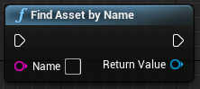
static UFMODAsset *FindAssetByName(
const FString &Name
);
- Name
- The asset name.
See Also: UFMODAsset
Find Event By Name
Find an Event by name.
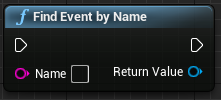
static UFMODEvent *FindEventByName(
const FString &Name
);
- Name
- The event name.
See Also: UFMODEvent
Find Event Instances
Return a list of all event instances that are playing for this event.
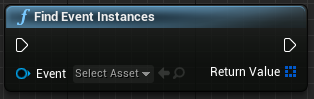
static TArray<FFMODEventInstance> FindEventInstances(
UObject *WorldContextObject,
UFMODEvent *Event
);
- WorldContextObject
- Object from current world context.
- Event
- UFMODEvent to find instances of.
Be careful using this function because it is possible to find and alter any playing sound, even ones owned by other audio components.
See Also: FFMODEventInstance
Get Global Parameter By Name
Get a global parameter value from the System.
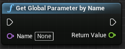
static float GetGlobalParameterByName(
FName Name
);
- Name
- Name of the parameter.
Will be deprecated in FMOD 2.01, use Get Global Parameter Value By Name instead.
See Also: Set Global Parameter By Name
Get Global Parameter Value By Name
Get a global parameter value from the System.
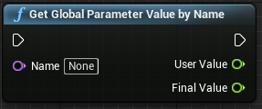
void GetGlobalParameterValueByName(
FName Name,
float &UserValue,
float &FinalValue
);
- Name
- Name of parameter
- UserValue
- Parameter value as set from the public API.
- FinalValue
- Final combined parameter value.
Get Output Drivers
List all output device names.

static TArray<FString> GetOutputDrivers();
See Also: Set Output Driver By Index, Set Output Driver By Name
Is Bank Loaded
Return true if a bank is loaded.
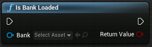
static bool IsBankLoaded(
UFMODBank *Bank
);
- Bank
- UFMODBank to query.
See Also: Load Bank
Load Bank
Load a bank.
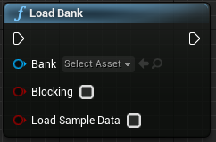
static void LoadBank(
UFMODBank *Bank,
bool bBlocking,
bool bLoadSampleData
);
- Bank
- UFMODBank to use.
- bBlocking
- Whether the bank will load synchronously.
- bLoadSampleData
- Whether sample data will be preloaded immediately.
Load Bank Sample Data
Load bank sample data.
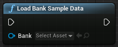
static void LoadBankSampleData(
UFMODBank *Bank
);
- Bank
- UFMODBank to use.
Load Event Sample Data
Load event sample data.
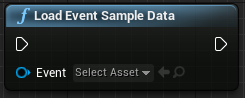
static void LoadEventSampleData(
UObject *WorldContextObject,
UFMODEvent *Event
);
- WorldContextObject
- Object from current world context.
- Event
- UFMODEvent to use.
This can be done ahead of time to avoid loading stalls.
Mixer Resume
Resume the FMOD mixer.
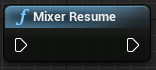
static void MixerResume();
Used when resuming the application.
Mixer Suspend
Suspend the FMOD mixer.
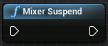
static void MixerSuspend();
Used when suspending the application.
Play Event 2D
Play an event without a specified location.
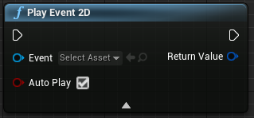
static FFMODEventInstance PlayEvent2D(
UObject *WorldContextObject,
UFMODEvent *Event,
bool bAutoPlay
);
- WorldContextObject
- Object from current world context.
- Event
- UFMODEvent to use.
- bAutoPlay
- Start the event automatically.
This returns an FFMODEventInstance.
The sound does not travel with any actor.
Play Event At Location
Plays an event at the given location.
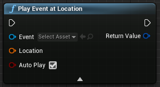
static FFMODEventInstance PlayEventAtLocation(
UObject *WorldContextObject,
UFMODEvent *Event,
const FTransform &Location,
bool bAutoPlay
);
- WorldContextObject
- Object from current world context.
- Event
- UFMODEvent to use.
- Location
- World position to play event at.
- bAutoPlay
- Start the event automatically.
This returns an FMOD Event Instance.
The sound does not travel with any actor.
Play Event Attached
Play an event attached to and following the specified component.
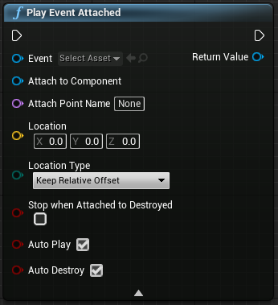
static class UFMODAudioComponent *PlayEventAttached(
UFMODEvent *Event,
USceneComponent *AttachToComponent,
FName AttachPointName,
FVector Location,
EAttachLocation::Type LocationType,
bool bStopWhenAttachedToDestroyed,
bool bAutoPlay,
bool bAutoDestroy
);
- Event
- UFMODEvent to use.
- AttachToComponent
- Component to attach to.
- AttachPointName Opt
- Named point within the AttachComponent to play the sound at.
- Location
- Depending on the value of Location Type this is either a relative offset from the attach component/point or an absolute world position that will be translated to a relative offset.
- LocationType
- Location is a relative offset or an absolute world position.
- bStopWhenAttachedToDestroyed
- The sound should stop playing when the owner of the attach to component is destroyed.
- bAutoPlay
- Start the event automatically.
- bAutoDestroy
- Automatically destroy the audio component when the sound is stopped.
Set Global Parameter By Name
Set a global parameter from the System.
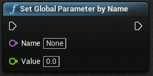
static void SetGlobalParameterByName(
FName Name,
float Value
);
- Name
- Name of parameter.
- Value
- Value to apply to the parameter.
Set Locale
Set the active locale for subsequent bank loads.
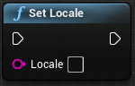
static void SetLocale(const FString& Locale);
Set Output Driver By Index
Set current output device by its index from GetOutputDrivers.
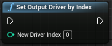
static void SetOutputDriverByIndex(
int NewDriverIndex
);
- NewDriverIndex
- Index of driver to use.
See Also: Get Output Drivers
Set Output Driver By Name
Set current output device by name or part of the name.
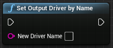
static void SetOutputDriverByName(
FString NewDriverName
);
- NewDriverName
- Name of new driver to use.
See Also: Get Output Drivers
Unload Bank
Unload a bank.
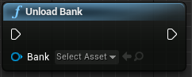
static void UnloadBank(
UFMODBank *Bank
);
- Bank
- UFMODBank to use.
Unload Bank Sample Data
Unload bank sample data.
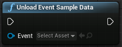
static void UnloadBankSampleData(
UFMODBank *Bank
);
- Bank
- UFMODBank to use.
Unload Event Sample Data
Unload event sample data.
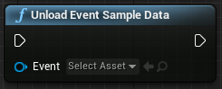
static void UnloadEventSampleData(
UObject *WorldContextObject,
UFMODEvent *Event
);
- WorldContextObject
- Object from current world context.
- Event
- UFMODEvent to use.
VCA Set Volume
Set volume on a VCA.
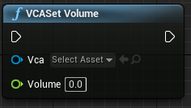
static void VCASetVolume(
UFMODVCA *Vca,
float Volume
);
- Vca
- UFMODVCA to use.
- Volume
- Volume value.